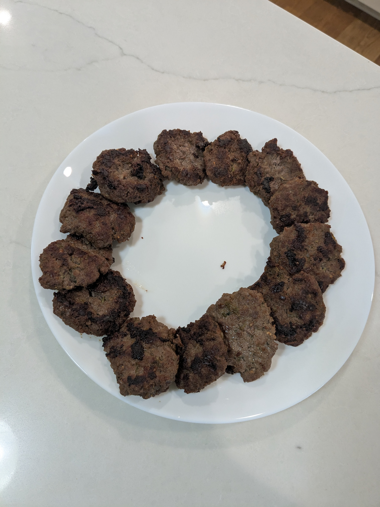

Nuea Gratiem Prik Thai (Three Buddy Sausage)

Ingredients
- 1½ lb ground beef, no more than 75% lean
- 6 cilantro roots, coarsely chopped
- 8 cloves garlic, coarsely chopped
- 1 tsp white peppercorns
- 2 tbs fish sauce
- 2 tbs seasoning soy sauce (like Golden Mountain)
- 2 tbs oyster sauce
- 1½ tsp sugar
Directions
- Make Paste: Grind peppercorns, then add garlic and cilantro and grind into a coarse paste.
- Mix Beef: Combine paste with ground beef, fish sauce, soy sauce, oyster sauce, and sugar. Mix well (hands work best).
- Heat Pan: Heat a pan over medium with no added oil - the beef will render enough fat.
- Form Patties: Shape the mixture into small patties and add to the pan.
- Cook: Fry until well-browned on both sides.
- Drain & Serve: Remove patties and drain on a wire rack.
Chef's Notes
- If you can't find cilantro roots, cilantro stems work just as well.
- Impossible Beef is a good substitute and works nicely in this recipe.
The Gumbo Page
Michael Fritsche
mbf@fritsche.org